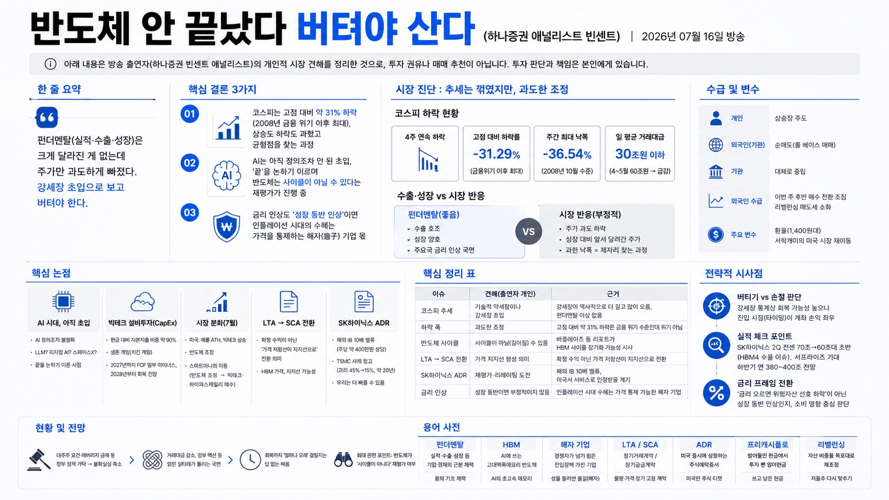

반도체 안 끝났다 버텨야 산다 (하나증권 애널리스트 빈센트) | 2026년 07월 16일 방송
아래 내용은 방송 출연자(하나증권 빈센트 애널리스트)의 개인적 시장 견해를 정리한 것으로, 투자 권유나 매매 추천이 아닙니다. 투자 판단과 책임은 본인에게 있습니다.

01핵심 개요
항목
내용
채널
언더스탠딩
주제
4주 연속 하락한 코스피와 반도체, '추세가 꺾였나 vs 과도한 조정인가'에 대한 진단
한 줄 요약
펀더멘탈(실적·수출·성장)은 크게 달라진 게 없는데 주가만 과도하게 빠졌다, 강세장 초입으로 보고 버텨야 한다는 시각
핵심 결론 1
코스피는 고점 대비 약 31% 하락(2008년 금융위기 이후 최대), 상승도 하락도 과했고 균형점을 찾는 과정
핵심 결론 2
AI는 아직 정의조차 안 된 초입, '끝'을 논하기 이르며 반도체는 사이클이 아닐 수 있다는 재평가가 진행 중
핵심 결론 3
금리 인상도 '성장 동반 인상'이면 인플레이션 시대의 수혜는 가격을 통제하는 해자(垓子) 기업 몫
02핵심 내용 구조 / 시장 진단
(1) 추세가 꺾였나? 코스피 4주 연속 하락, 저점을 계속 내림. 차트상 추세는 꺾인 것으로 볼 수 있음.
(2) 회복 가능한가? V자 반등은 어렵고, 올해 안 회복이냐 내년까지 가느냐의 우려.
주간 단위 최대 낙폭 약 36.54%는 2008년 10월(금융위기) 수준. 당일 기준 고점 대비 하락률은 약 31.29%로 금융위기 이후 최대.
그런데 수출·성장은 좋고 주요국이 금리를 올리는 국면 → "위기가 아닌데 위기 수준 낙폭". 출연자는 '주식 시장이 과했다', 성장 대비 앞서 달려간 주가가 제자리를 찾는 과정으로 해석.
상승장을 이끈 건 개인. 외국인(정확히는 외국 '기관', 룰 베이스 매매)은 순매도, 기관은 대체로 중립.
거래대금이 4~5월 하루 약 60조 원에서 30조 원 언더로 급감 → 투매(공포 매도)가 아직 안 나온 '버티는' 국면. 트리거 하나에 위·아래로 크게 튈 수 있음.
이번 주 후반 외국인이 조금씩 매수 전환. 리밸런싱 매도세는 어느 정도 소화됐다는 시각. 변수는 환율(1,400원대)과 서학개미의 미국 시장 재이동.
03기술적·시장 맥락
강세장/약세장 비대칭성: S&P500은 강세장 평균 약 5.3년(+200% 이상)·약세장 약 1년, 코스피는 강세장 약 3년·약세장 약 1.5년(약 절반 하락). 역사적으로 강세장이 더 길고 많이 오른다 → 펀더멘탈에 이상 없으면 버티는 전략.
AI 시대 정의 논쟁: 철도 혁명=철도, IT 혁명=인터넷처럼 명확하지 않음. LLM(거대언어모형)? 피지컬 AI? 스페이스X? 양자? 정의가 안 된 것의 '끝'을 논하는 게 맞느냐는 반문.
빅테크 설비투자(CapEx): 미국 빅테크는 현금 대비 자본지출 비중 약 90%로 '생존 게임(치킨 게임)'. 알파벳 등 실적 발표에서 투자 축소를 말할 기업은 없음. 프리캐시플로(잉여현금흐름)는 2027년까지 일부 마이너스 전망이나 2028년부터 회복 전망 → 수익성 개선 신호.
7월 시장 분화: 미국은 애플 올타임 하이, 빅테크 상승 vs 반도체 조정. 스마트머니가 '반도체 조정, 빅테크·하이퍼스케일러 매수'로 이동. 한국은 시총의 50% 이상이 반도체라 직격탄.
계약 구조 변화(LTA→SCA): 장기거래계약(LTA)에서 SCA로 전환은 확정 수익 보장이 아니라 '가격의 저항선이 지지선으로' 바뀌는 의미. HBM(고대역폭메모리) 가격이 지지선이 될 가능성.
ADR·밸류에이션: SK하이닉스 미국 ADR(주식예탁증서) 상장 시 해외 IB는 10배 밸류(주당 약 400만 원 상당)를 부여. TSMC 사례(ADR-본주 괴리 45%→15%, 약 20년 소요)를 참고하되 우리는 더 빠를 수 있다는 시각.
금리·유가: 공급발 유가 인플레이션이 시차를 두고 금리로 반영. 유가 피크는 이미 지나는 중, 미국 인플레이션 압력은 올해 말이 고점 전망.
04전략적 의미
펀더멘탈(수출·성장·실적)은 1년 전이나 지금이나 비슷한데, 시장이 같은 정보를 상승장에선 긍정적으로, 지금은 부정적으로 해석하는 '무게중심의 이동'이 문제.
핵심 논란은 결국 '반도체가 사이클이냐 아니냐'로 수렴. 사이클이면 7월 7일(삼성전자 고점)에 떠났어야 했고, 사이클이 아니라 인프라(구조적 성장)일 수 있다는 재평가가 진행 중.
금리 인상의 동인이 중요: 성장 없는 인상은 하락 트리거지만, 성장 동반 인상은 인플레이션 시대를 뜻하고 가격을 통제할 수 있는 AI 해자 기업(=반도체)이 수혜.